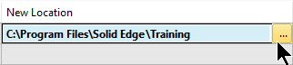

Set obsolete status on a released document
-
Be sure that you have document controller privileges.
For more information, see Assign document controller privileges.
-
In the Design Manager document list, click the Current Filename cell for the released document you want to make obsolete.
-
Choose Home tab→Action group→Obsolete .
If you specified in the Solid Edge Options dialog box→Manage tab→Life Cycle page the location where you want to save documents with Obsolete status, Design Manager updates the relevant columns to prepare the document for the status change.
If you did not specify a location, Design Manager displays the Edit Path dialog box, where you can do either of the following:
-
To move all the files and not maintain the folder structure, on the Save Files to Single Folder tab, select the folder and click OK.
Note:You can use the New Folder button to create a new folder at the location listed in the Folder box.
-
To move all the files and maintain the folder structure, on the Maintain Folder Structure tab, enter the new location and click Replace All.
Note:To display a list of available locations, click the Browse button .
-
-
(Optional) To select a new location, in the New Location cell, click the Browse button , and choose a new location.

-
Do one of the following:
-
To cancel the change, click the Current Filename cell for the document of interest, and choose Home tab→Action group→Clear Action
 .Note:
.Note:To cancel all changes, press Ctrl+A and click Clear Action.
-
To make the change, choose Home tab→Action group→Perform Actions
 .
.
-
-
(Optional) For details about the status of any document, such as who released it and when, hover over the Current Filename cell for the document of interest.
How do I
Change the status of a documentLearn more
Document status typesSetting obsolete status on released documents